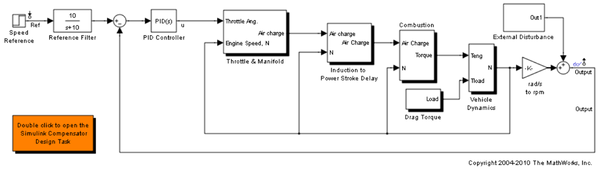
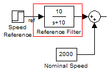
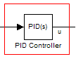
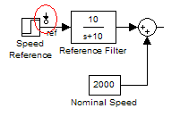
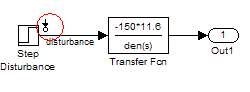
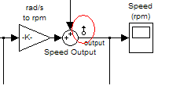
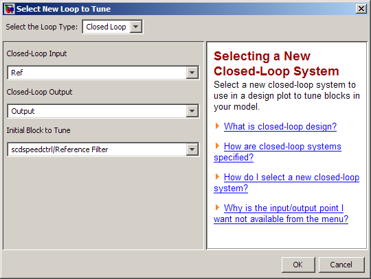
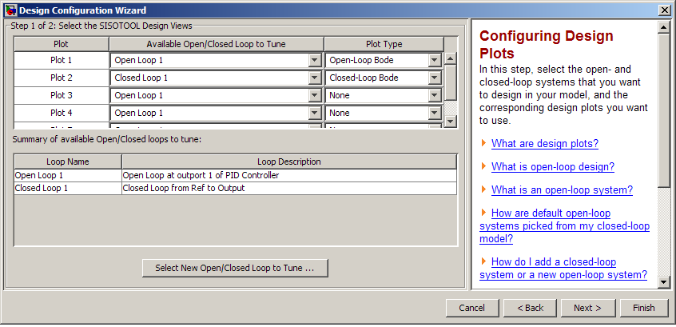
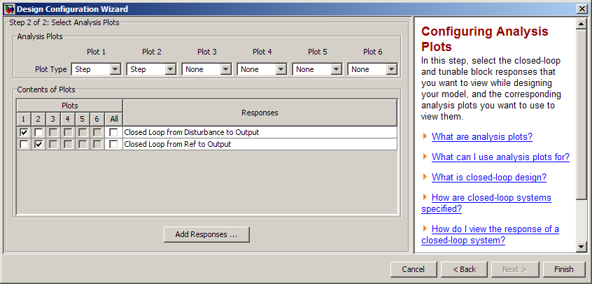
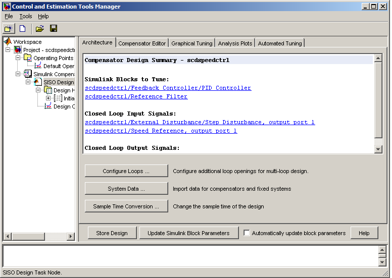

Single Loop Feedback/Prefilter Compensator Design
Contents
Opening the Model
Take a few moments to explore the model.
Open the engine speed control model
open_system('scdspeedctrl');
 
Design Overview
This demonstration introduces the process of designing a single loop control system with both feedback and prefilter compensators. The goal of the design is to
- Track the reference signal from a Simulink® step block scdspeedctrl/Speed Reference. The design requirement is to have a settling time of under 5 seconds and zero steady state error to the step reference input.
- Reject a non-measured output disturbance specified in the subsystem scdspeedctrl/External Disturbance. The design requirement is to reduce the peak deviation to 190 RPM and to have zero steady state error for a step disturbance input.
In this example the stabilization of the feedback loop and the rejection of the output disturbance is achieved by designing the PID compensator scdspeedctrl/PID Controller. The prefilter scdspeedctrl/Reference Filter is used to tune the response of the feedback system to changes in the reference tracking.
Creating a SISO Design Task
In this example you will use a Simulink Compensator Design Task to create a SISO Design Task to tune the compensators in this feedback system. There are two alternatives for creating the SISO Design Task
- Launch a preconfigured Simulink® Control Design™ task by double clicking on the subsystem in the lower left corner of the model.
- Work through the following procedure to create the SISO Design Task.
Starting a New Design
Step 1 Start a new Simulink Compensator Design Task for the model scdspeedctrl.mdl by choosing Tools -> Control Design -> Compensator Design from the Simulink model.
Step 2 Select the following blocks to tune:
- scdspeedctrl/Reference Filter

- scdspeedctrl/PID Controller

Step 3 Select the closed loop signals:
- Input: scdspeedctrl/Speed Reference output port 1

- Input scdspeedctrl/External Disturbance/Step Disturbance output port 1

- Output scdspeedctrl/Speed Output output port 1

Step 4 In the Operating Points panel select Default Operating Point.
Step 5 Click on the Tune Blocks... button to launch the Design Configuration Wizard.
To tune the Open Loop at the outport 1 of scdspeedctrl/ PID Controller, select Open Loop 1 for Plot 1 and select Open-Loop Bode as its Plot Type.
To tune the closed loop between the Speed Reference and the engine speed output, click the Select New Open/Closed Loop to Tune... button. In the Select New Loop to Tune dialog, make the following selections:
- Select the Loop Type: Closed-Loop (default)
- Closed Loop Input: scdspeedctrl/Speed Reference
- Closed Loop Output: scdspeedctrl/Speed Output
- Initial Block to Tune: scdspeedctrl/Reference Filter
The fully configured dialog is shown below:

In the wizard select Closed Loop 1 for Plot 2 and select Closed-Loop Bode as its Plot Type. The completed first step in the wizard is shown below:

In step 2 of the wizard select Step responses for Plot 1 and Plot 2. Then in the Contents of Plots table
- Select Plot 1 for the Closed Loop from scdspeedctrl/External Disturbance/Step Disturbance to scdspeedctrl/Speed Output
- Select Plot 2 for the Closed Loop from /Speed Reference

After completing the wizard a SISO Design Task node is created. Use this task node to complete the design.

Completing the Design
The SISO Design Task contains 4 methods to tune a control system:
- Use the Compensator Editor panel to manually tune the parameters of each compensator. See the demo "Tuning Simulink Blocks in the Compensator Editor".
- Configure Design Plots in the Graphical Tuning panel and the them to design the poles, zeros, and gains of the compensators using Root Locus, Open/Closed-Loop Bode Plots, and Nichols plots.
- Use the Optimization based tuning option in the Automated Tuning panel (requires Simulink® Design Optimization™) to tune the compensators using both time and frequency domain design requirements. See the demo "Engine Speed Controller Tuning".
- Use the PID tuning, IMC tuning, and LQG synthesis options in the Automated Tuning panel to compute initial parameters for the compensators based on tuning parameters such as closed-loop time constants.
Completed Design
The design requirements can be met with the following controller parameters
- scdspeedctrl/PID Controller has parameters:
P = 0.0012191
I = 0.0030038
- scdspeedctrl/Reference Filter:
Numerator = 10;
Denominator = [1 10];
The responses of the closed loop system are shown below:

Writing the Design to Simulink
You can then test the design on the nonlinear model by clicking the Update Simulink Block Parameters button. This writes the parameters back to the Simulink model.
bdclose('scdspeedctrl')